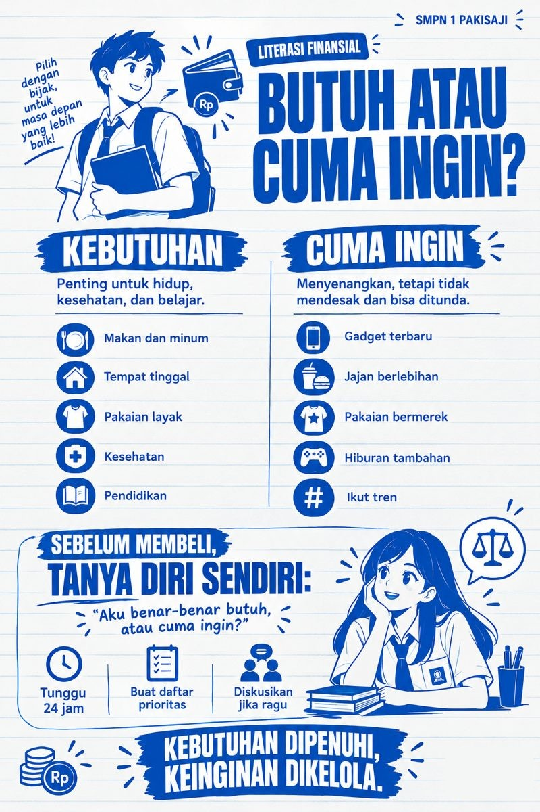
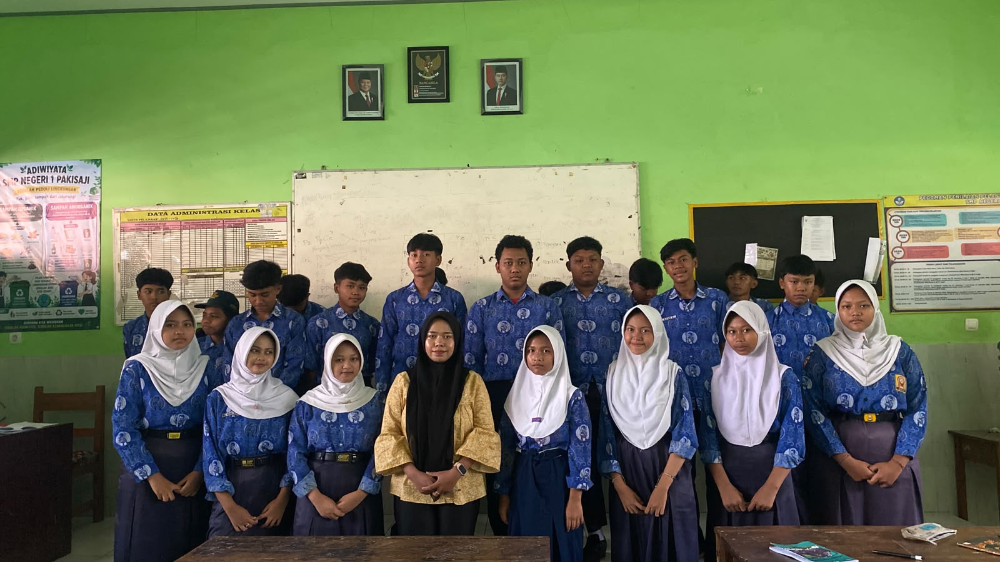
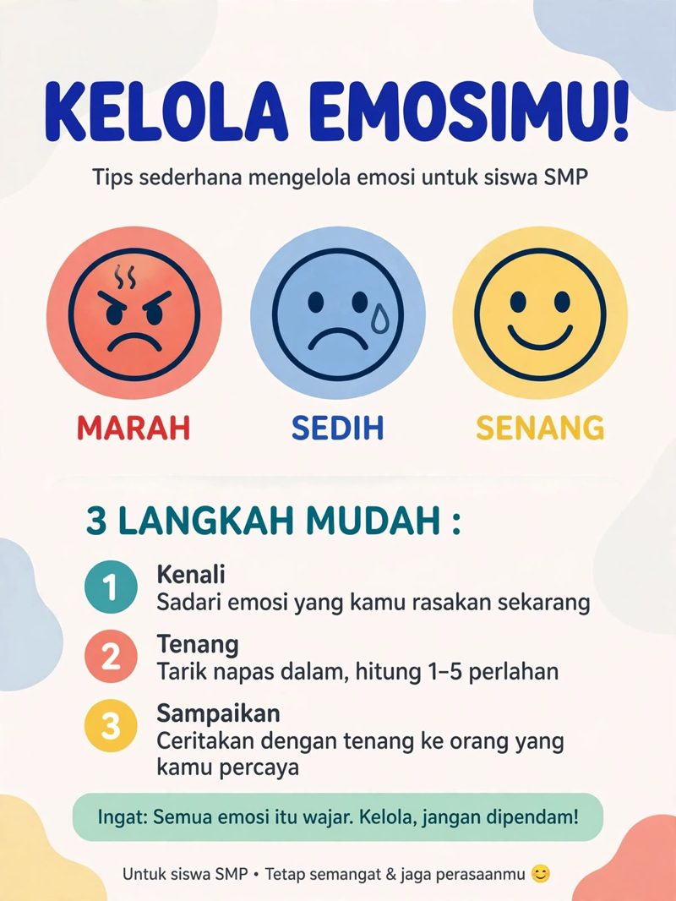
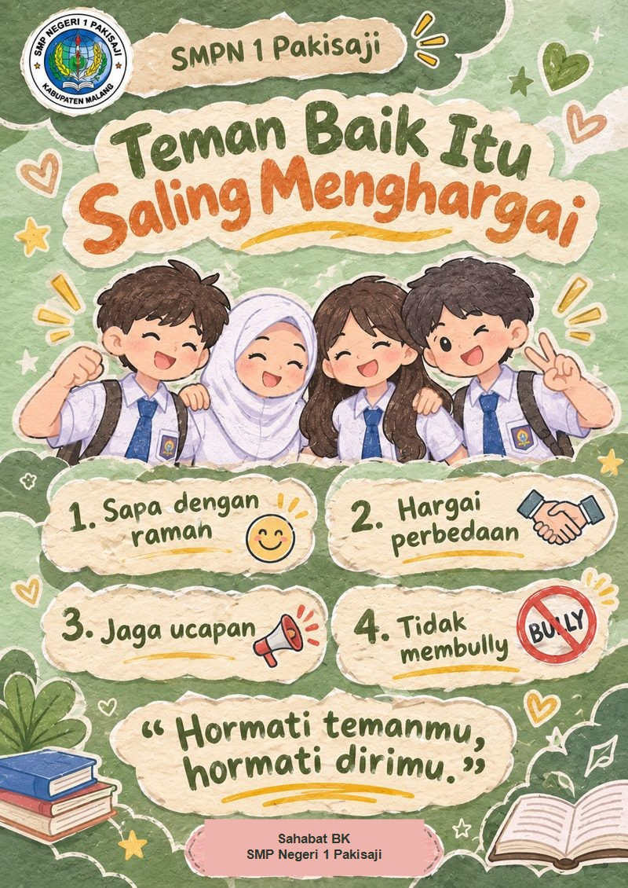
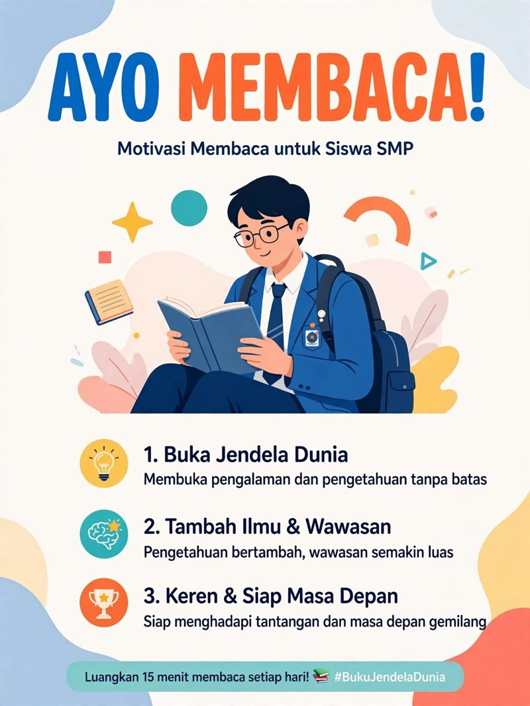
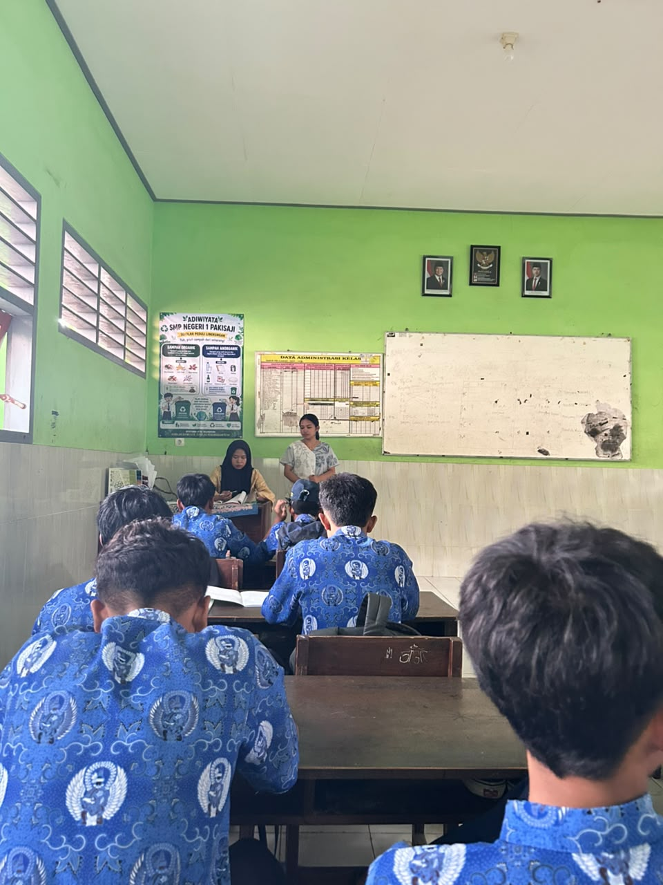
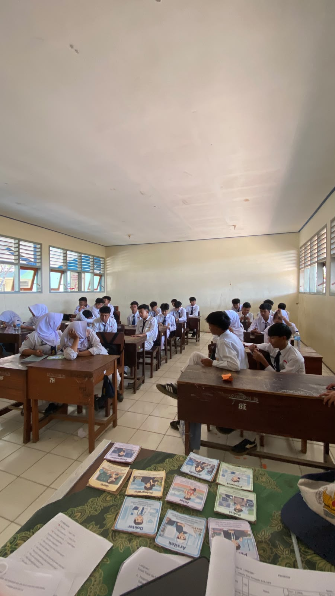

Literasi Finansial
Butuh atau Cuma Ingin?
Prioritaskan kebutuhan sekolah & kesehatan sebelum keinginan sesaat.
Layanan Bimbingan dan Konseling SMP Negeri 1 Pakisaji hadir mendampingi seluruh siswa dalam mengembangkan potensi akademik, merawat kesehatan emosional, membangun pertemanan yang sehat, serta merencanakan cita-cita sejak dini.

Membantu siswa dalam mengenali dan mengembangkan potensi, bakat, serta kekuatan dirinya secara maksimal.
Memberikan dukungan pendampingan dalam menghadapi permasalahan pribadi, sosial, maupun akademik.
Menumbuhkan sikap positif, etika pergaulan yang santun, serta kepedulian terhadap lingkungan sekolah Adiwiyata.
Memfasilitasi eksplorasi karier dan perencanaan studi lanjut yang selaras dengan minat serta cita-cita siswa.
Layanan Bimbingan dan Konseling (BK) hadir sebagai bagian integral dari proses pendidikan di SMP Negeri 1 Pakisaji Kabupaten Malang. Kami berkomitmen mendampingi peserta didik kelas VII, VIII, dan IX dalam menghadapi masa transisi remaja di bidang akademik, sosial, pribadi, maupun perencanaan karier.
“BK bukan tempat untuk ‘anak bermasalah’ atau tempat penghukuman, melainkan ruang aman dan nyaman bagi seluruh siswa untuk berbagi cerita, mendapatkan arahan, dan mengembangkan potensi dirinya secara optimal.”
Melalui kolaborasi bersama program Pengenalan Lapangan Persekolahan (PLP) Bimbingan dan Konseling Universitas PGRI Kanjuruhan Malang (UNIKAMA), portal digital ini dirancang agar siswa dapat mengakses materi pengembangan diri dan asesmen diagnostik kapan saja secara interaktif.
Mendampingi dengan Hati, Membimbing Menuju Prestasi & Karakter Mulia
Pilih salah satu bidang layanan di bawah ini untuk melihat fokus pendampingan, topik diskusi, serta kegiatan nyata di SMP Negeri 1 Pakisaji.
Membantu siswa mengenal potensi diri, membangun rasa percaya diri, membentuk kepribadian yang positif, serta mengelola emosi dan tantangan psikologis masa remaja secara sehat.
Pilih jalur yang paling membuatmu merasa nyaman untuk memulai percakapan
Kunjungi Ruang BK pada jam istirahat atau saat jam pelajaran kosong. Ini adalah cara paling mudah dan umum dilakukan siswa.
Atur jadwal temu lewat Guru BK, wali kelas, atau melalui formulir permohonan konseling pada website ini.
Kirim pesan sopan melalui WhatsApp resmi Guru BK atau saluran komunikasi sekolah untuk menanyakan ketersediaan waktu.
Jika masih merasa malu atau canggung datang sendirian, ajak sahabatmu untuk menemani ke Ruang BK terlebih dahulu.
Layanan call-in berkala untuk menyapa perkembangan akademik maupun menindaklanjuti informasi dari wali kelas.
Pendampingan khusus atas kolaborasi bersama wali kelas, guru mata pelajaran, atau orang tua yang peduli pada perkembanganmu.
Pelajari panduan praktis pergaulan sehat, strategi meningkatkan motivasi belajar, kiat membangun percaya diri, serta kartu eksplorasi profesi masa depan.
Pada masa remaja di bangku SMP, berteman dengan lawan jenis merupakan hal yang wajar. Pertemanan yang sehat membantu kita mengenal karakter diri, belajar menghargai perbedaan, dan membangun kerja sama belajar yang positif. Agar suasana kelas tetap nyaman, terapkan 4 Pilar Etika Pergaulan berikut:
Menolak perlakuan yang membuatmu risih adalah hakmu! Pilih situasi di bawah ini untuk melihat contoh kalimat asertif yang bisa kamu ucapkan:
Dorongan belajar yang lahir dari rasa ingin tahu, kepuasan saat berhasil memahami materi baru, dan keinginan tulus untuk meraih cita-cita masa depan.
Semangat belajar yang tumbuh berkat dukungan orang tua, apresiasi guru, suasana belajar bersama sahabat yang suportif, maupun target meraih prestasi.
Centang kebiasaan belajar di bawah ini yang sudah atau siap kamu terapkan minggu ini untuk melihat skor kesiapan belajarmu:
Pilih kebiasaan belajar yang sudah atau ingin kamu terapkan minggu ini.
Percaya diri adalah keyakinan pada kemampuan diri sendiri disertai penerimaan atas kelebihan maupun kekurangan yang dimiliki, tanpa perlu merasa lebih rendah atau lebih tinggi dari orang lain.
Klik tombol di bawah ini untuk melatih cara mengubah kalimat minder menjadi kalimat penguat diri:
Sebagaimana media Kartu Profesi yang digunakan dalam kegiatan layanan Bimbingan Klasikal di kelas SMP Negeri 1 Pakisaji, klik salah satu dari 9 kartu profesi di bawah ini untuk melihat keterampilan, mata pelajaran pendukung, serta jalur pendidikannya:
Isi sesuai kondisi dirimu dengan jujur—tidak ada jawaban benar atau salah. Hasil analisis beserta rekomendasi dari Sahabat BK akan langsung tampil secara instan.
Pilih tingkat kesesuaian pernyataan berikut dengan kebiasaan dan hal yang kamu sukai sehari-hari.
Pilih satu jawaban (V, A, atau K) pada setiap nomor yang paling menggambarkan kebiasaanmu saat belajar.
Mengenali emosi yang sedang kamu rasakan adalah langkah pertama untuk mengelola suasana hati dengan sehat.
Empat panduan visual praktis untuk membangun kemandirian finansial, regulasi emosi, budaya anti-perundungan, dan kegemaran membaca di SMPN 1 Pakisaji.

Prioritaskan kebutuhan sekolah & kesehatan sebelum keinginan sesaat.

3 langkah mudah: Kenali perasaanmu, Tenang tarik napas, dan Sampaikan.

Sapa dengan ramah, hargai perbedaan, jaga ucapan, dan tidak mem-bully.

Buka jendela dunia, tambah wawasan, dan siap menghadapi masa depan.
Klik kategori yang tepat untuk setiap pengeluaran siswa SMP di bawah ini:


Informasi jadwal operasional Ruang BK SMP Negeri 1 Pakisaji serta formulir pembuatan tiket janji temu konseling.
Senin – Jumat: 07.00 – 15.00 WIB
Jam Istirahat: Tetap Dilayani (Pintu Ruang BK Terbuka)
Sabtu – Minggu & Hari Besar: Libur
Ruang BK SMP Negeri 1 Pakisaji
Jl. Raya Pakisaji, Kecamatan Pakisaji, Kabupaten Malang, Jawa Timur
Setiap sesi konseling perorangan maupun kelompok dilaksanakan berdasarkan Asas Kerahasiaan, Asas Kesukarelaan, dan Asas Keterbukaan.
Isi formulir singkat di bawah ini untuk membuat ringkasan tiket janji temu dengan Guru BK.